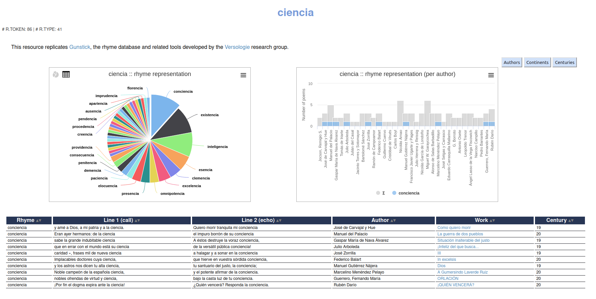

Interdisciplinary networking meeting for researchers and early career researchers
Helena Bermúdez Sabel
Mare Balticum Fellow 2023
Outline
- Rationale: new roles of an editor?
- Machine-assisted pipelines
Rationale
Machine-assisted pipelines
- Selecting a workflow based on performance
evaluation
- Evaluation of the learning curve
- Large collections of electronic resources enable
- new research questions
- new methodologies
- corpus based and corpus driven research
- working through the noise (e.g. Franzini et al. 2018)
Machine-assisted pipelines
Automatic text recognition
- From images to annotated, machine-readable texts
- Pre-trained models and easy-to-use training algorithms
- From transcription file formats to TEI through
- scripting (e.g. DiScholEd pipeline, LECTAUREP - Page2tei, Transkribus)
- machine-learning approaches (e.g. Khemakhem et al. 2017, Pagel et al. 2021, Ruiz et al. 2022)
Automatic collation
- The Gothenburg model (see training materials example)
- Tokenisation
- Normalisation/regularisation
- Alignment
- Analysis
- Visualisation/output
Automatic collation tools
- Web-based tools for TEI (see Roeder 2020)
- Collatex
- Hypercollate, processing of TEI transcriptions of texts with variation (Bleeker et al. 2022)

Automatic annotation
- Need to evaluate models and training corpora
- Challenges:
- Lower performance for historical varieties and low-resource languages of pre-trained models
- Combination of marked-up and plain text formats during the
annotation pipeline
- To cite a few exceptions: NEISS TEI Entity Enricher (Lemke & Sperfeld 2023), acdh-spacytei (Andorfer & Schlögl 2021), Standoff Tools (Lück 2023)
Machine-assisted manual annotation
Interface sustainability
- Issues: assuring the infrastructure and maintenance after the funding period, deprecation of dependencies, changes in browser support, etc.
- (Partial) solution: Out-of-the-box corpus
exploitation platforms
- The role of Virtual Research Environments in digital textual criticism (Tóth-Czifra 2021). Examples:
- Existence of several resources with
specific functionalities that enable text and image
visualisation, queries, and/or statistical analyses. Examples:
- Publication: TEI Publisher, Ediarum, EVT
- Corpus exploitation: CorpusExplorer, eDictor, PhiloLogic, TEITOK, TXM
If custom interface: Its preservation as a cultural object
- Rationale: digital editions as interfaces (Bleier et al. 2018) and the interface as part of the philological discourse (Andrews & van Zundert 2018)
- Presentational information as part of the data
model
- Relation with the bibliographical study of digital texts and artifacts (e.g. ebooks, videogames, digital recordings of artistic performances)
- TEI Processing Model (TEI Consortium 2023)
Édition hyperDIplomatique de la lyrique GAlégo-portugaise (DIGA)
Édition hyperDIplomatique de la lyrique GAlégo-portugaise (DIGA)
From open data to open science
Data usability
- TEI and linked data (see Spadini 2023)
- Relation between TEI-XML and graph-based technologies (e.g. Bleeker, Dekker et al. 2022, Eide 2015)
- Creation of linked data from TEI resources (e.g. Crompton & Schwartz 2018, Eide & Ore 2007, Page et al. 2019)
- Specific ecdotic models: semantic edition (Tomasi et al. 2019), assertive edition (Vogeler 2019)
- Out-of-the-box tools: LEAF-Writer
FAIR software
- FAIR software (Lamprecht et al. 2020) and open science workflows
- Besides data, reuse of
- Code and configuration parameters
- Interfaces
DISCOver: an interface to explore the DISCO sonnet corpus
Re-use of Gunstick within DISCOver
Conclusions
Final remarks
- Quality and quantity are not trade-offs thanks to:
- Methods to address challenges posed by reusing large annotated collections
- Machine-assisted pipelines
- Quality assessment of each step (see Bläß et al. 2022)
- New roles for an editor:
- Designing the pipeline, selecting the tools and automatic annotation models closest to project needs
- Establishing the acceptable margin of error
- Prioritising human correction needs
Thank you for your attention!
Bibliographic references
- Andorfer, Peter, and Matthias Schlögl. 2021. “acdh-spacytei.” In KONDE Weißbuch. Hrsg. v. Helmut W. Klug unter Mitarbeit von Selina Galka und Elisabeth Steiner im HRSM Projekt "Kompetenznetzwerk Digitale Edition".
- Andrews, Tara L., and Joris J. van Zundert. 2018. “What Are You Trying to Say? The Interface as an Integral Element of Argument.” In Digital Scholarly Editions as Interfaces, edited by Roman Bleier, Martina Bürgermeister, Helmut W. Klug, Frederike Neuber, and Gerlinde Schneider, 12:3–33. Norderstedt: BoD.
- Bläß, Sandra, Marie Flüh, Julia Nantke, and David Maus. 2022. “Quality Management for Machine Generated Data in Digital Scholarly Editions – Possibilities and Challenges.” Machine Learning and Data Mining for Digital Scholarly Editions. University of Rostock, 9-10 June 2022.
- Bermúdez Sabel, Helena (2021). “Comment construire un corpus pour l’analyse en linguistique historique”. Lecture for the MA course Linguistique de corpus (Prof. Corinne Rossari). April 19, 2021. University of Neuchâtel. Neuchâtel, Switzerland. [Slides]
- Bermúdez Sabel, Helena. 2018. Galician-Portuguese Lyric: A Philological and Historical Linguistics Approach. http://gl-pt.obdurodon.org.
- Bermúdez Sabel, Helena. 2022. “L’édition numérique au service de la philologie matérielle. Modèles de la lyrique galégo-portugaise.” In Verdades duplas. A verdade do texto e a verdade material. Cancioneiros e fragmentos galego-portugueses, edited by Déborah González, 11–30. ArGaMed 5/2022. Santiago de Compostela: Centro Ramón Piñeiro para a Investigación en Humanidades.
- Bermúdez Sabel, Helena, Francesca Dell’Oro, Cyrielle Montrichard, and Corinne Rossari. 2022. “Setting Up Bilingual Comparable Corpora with Non-Contemporary Languages.” In Proceedings of the BUCC Workshop within LREC 2022, 56–60. Marseille, France: European Language Resources Association.
- Bermúdez Sabel, Helena, Clara Martínez Cantón, and Pablo Ruiz Fabo. 2023. “DISCOvering Spanish Sonnets: A Circular Reading Experience.” In Computational Stylistics in Poetry, Prose, and Drama, edited by Anne-Sophie Bories, Petr Plecháč, and Pablo Ruiz Fabo, 67–86. Berlin, Boston: De Gruyter.
- Bleeker, Elli, Bram Buitendijk, Ronald Haentjens Dekker, Vincent Neyt, and Dirk Van Hulle. 2022. “Layers of Variation: A Computational Approach to Collating Texts with Revisions.” Digital Humanities Quarterly 16(1).
- Bleeker, Elli, Ronald Haentjens Dekker, and Bram Buitendijk. 2022. “Texts as Hypergraphs: An Intuitive Representation of Interpretations of Text.” Journal of the Text Encoding Initiative, Issue 14.
- Bleier, Roman, Martina Bürgermeister, Helmut W. Klug, Frederike Neuber, and Gerlinde Schneider. 2018. Digital Scholarly Editions as Interfaces. Norderstedt: BoD.
- Crompton, Constance, and Michelle Schwartz. 2018. “More Than ‘Nice to Have’: TEI-to-Linked Data Conversion.” In DH 2018 Book of Abstracts. Mexico City.
- Eide, Øyvind. 2015. “Ontologies, Data Modeling, and TEI.” Journal of the Text Encoding Initiative, Issue 8 (December).
- Eide, Øyvind, and Christian-Emil Ore. 2007. “From TEI to a CIDOC-CRM Conforming Model: Towards a Better Integration Between Text Collections and Other Sources of Cultural Historical Documentation.” In Digital Humanities 2007 Book of Abstracts.
- Franzini, Greta, Mike Kestemont, Gabriela Rotari, Melina Jander, Jeremi K. Ochab, Emily Franzini, Joanna Byszuk, and Jan Rybicki. 2018. “Attributing Authorship in the Noisy Digitized Correspondence of Jacob and Wilhelm Grimm.” Frontiers in Digital Humanities 5.
- Khemakhem, Mohamed, Luca Foppiano, and Laurent Romary. 2017. “Automatic Extraction of TEI Structures in Digitized Lexical Resources Using Conditional Random Fields.” In electronic lexicography, eLex 2017, Sep 2017, Leiden.
- Klie, Jan-Christoph, Michael Bugert, Beto Boullosa, Richard Eckart de Castilho, and Iryna Gurevych. 2018. “The INCEpTION Platform: Machine-Assisted and Knowledge-Oriented Interactive Annotation.” In Proceedings of the 27th International Conference on Computational Linguistics: System Demonstrations, 5–9. Association for Computational Linguistics.
- Lamprecht, Anna-Lena, Leyla Garcia, Mateusz Kuzak, Carlos Martinez, Ricardo Arcila, Eva Martin Del Pico, Victoria Dominguez Del Angel, et al. 2020. “Towards FAIR Principles for Research Software.” Data Science 3 (1): 37–59.
- Lemke, Marc, and Konrad Sperfeld. (2021) 2023. “TEI-Entity-Enricher.” NEISS.
- Lück, Christian. (2016) 2023. “Standoff Tools - Tools for Handling Standoff Annotations.”
- Page, Kevin, Toby Burrows, Andrew Hankinson, Matthew Holford, Andrew Morrison, David Lewis, and Athanasios Velios. 2019. “A Layered Digital Library for Cataloguing and Research: Practical Experiences with Medieval Manuscripts, from TEI to Linked Data.” In DH2019 Book of Abstracts. Utrecht.
- Pagel, Janis, Nidhi Sihag, and Nils Reiter. 2021. “Predicting Structural Elements in German Drama.” In Proceedings of the Second Conference on Computational Humanities Research (CHR2021), pp. 217-227, Amsterdam, The Netherlands (Online), November 2021.
- Roeder, Torsten. 2020 “Review of 'Juxta Web Service, LERA, and Variance Viewer. Web based collation tools for TEI'.” RIDE 11.
- Ruiz, Pablo, Delphine Bernhard, Andrew Briand, and Carole Werner. 2022. “Computational drama analysis from almost zero electronic text: The case of Alsatian theater.” Workshop on Computational Drama Analysis, Cologne, September 2022
- Spadini, Elena. 2023. “Semantic Web and Scholarly Editions: Where Are We? Towards a Philological Web of Data.” ATNU Virtual Visiting Speaker series. April 26. University of Newcastle.
- TEI Consortium. 2023. “The TEI processing model.” In P5: Guidelines for Electronic Text Encoding and Interchange.
- Tomasi, Francesca, Marilena Daquino, and Francesca Giovannetti. 2019. Paolo Bufalini. Quaderno di appunti (1981-1991). Dh.arc.
- Tóth-Czifra, Erzsébet. 2021. “Rethinking Text, Techné and Tenure: Evaluation and Peer Review Challenges around Virtual Research Environments in the Arts and Humanities.” Classics@ Journal 18 (1).
- Vogeler, Georg. 2019. “The ‘Assertive Edition.’” International Journal of Digital Humanities 1 (2): 309–22.